秋色优先
禾木、喀纳斯安排在9月27—30日，赶在10月1日国庆高峰前。禾木白天游不住宿（住宿贵且评价一般），把2晚预算留给喀纳斯。
4人 · 两组情侣 · 2名司机｜9月25日深夜抵达，10月4日15:00返程。把禾木与喀纳斯放在国庆客流高峰前，喀纳斯住2晚从容看三湾与观鱼台；最后在赛里木湖收尾，返乌当晚逛领馆巷夜市。
路线不是把景点简单串起来，而是围绕季节、航班和山区风险倒推：先抢秋色、再走雅丹，最后用高速完成赛里木湖往返。
禾木、喀纳斯安排在9月27—30日，赶在10月1日国庆高峰前。禾木白天游不住宿（住宿贵且评价一般），把2晚预算留给喀纳斯。
乌鲁木齐向北走S21，经阿禾公路进入山区；从布尔津沿G3014南下克拉玛依，再接G30向西去赛里木湖，主线方向连续。
10月4日15:00起飞，因此10月3日离开赛里木湖回乌鲁木齐市区还车，住市区一晚并逛领馆巷夜市。返程日不安排购物。
使用稳定的中文标注底图。点击右侧某一天可单独查看线路；橙色标景点、绿色标住宿、红色标加油、蓝色标服务区。
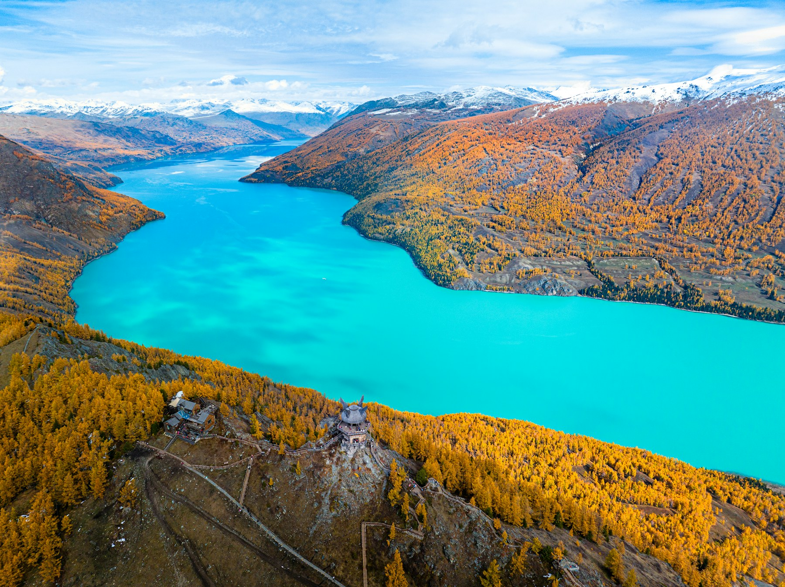
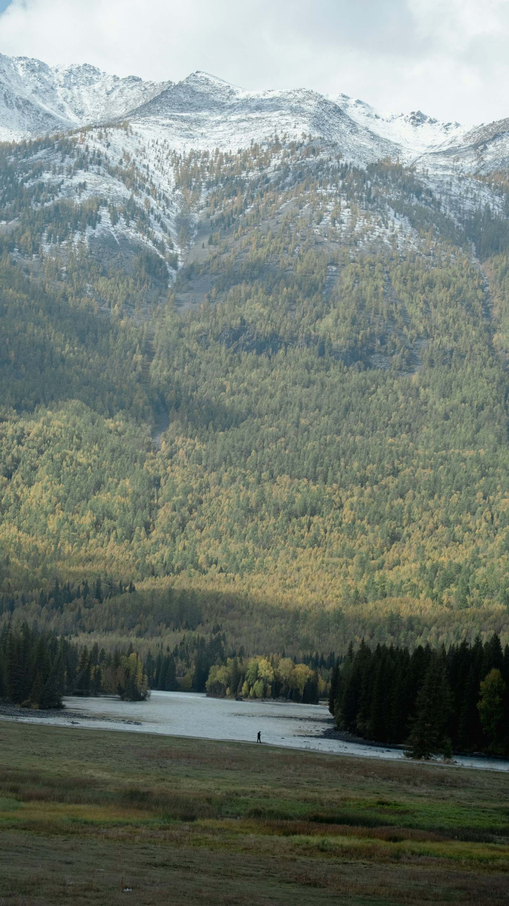
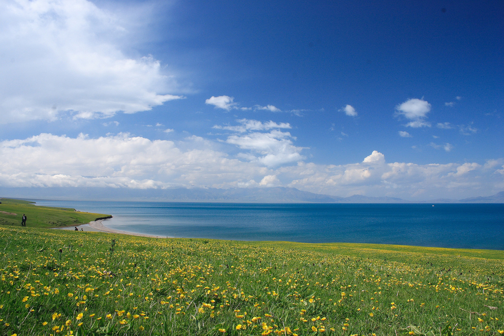
“纯驾驶”不含吃饭、拍照、排队、安检和景区换乘；长途日已为两名司机安排约2小时一次的轮换节点。
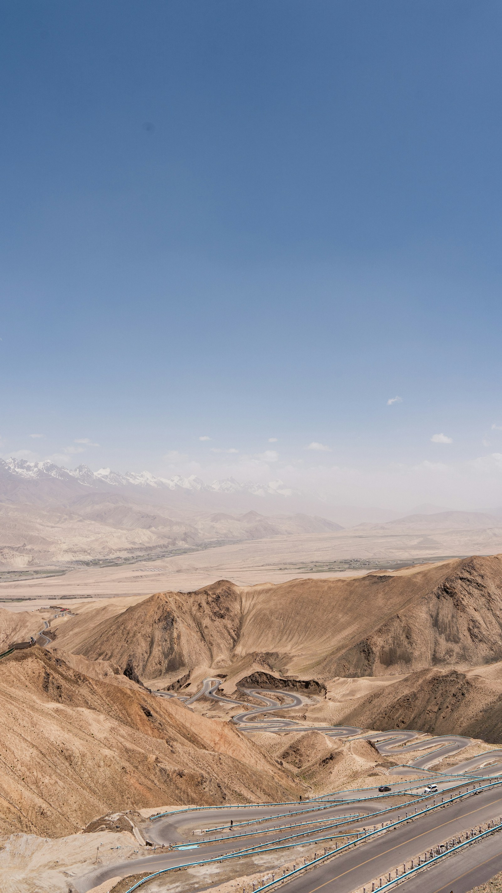
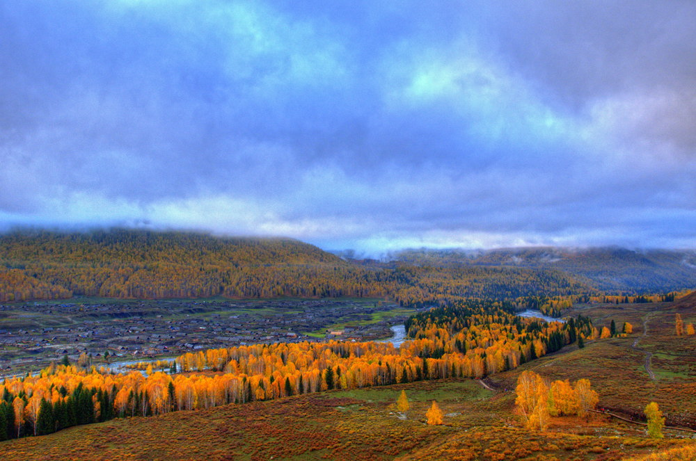
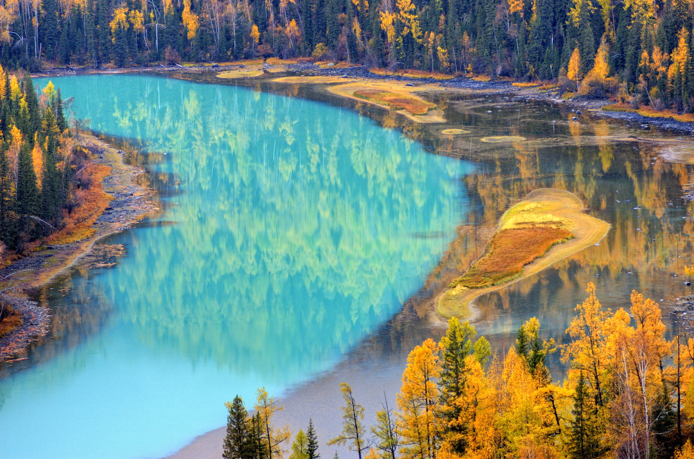
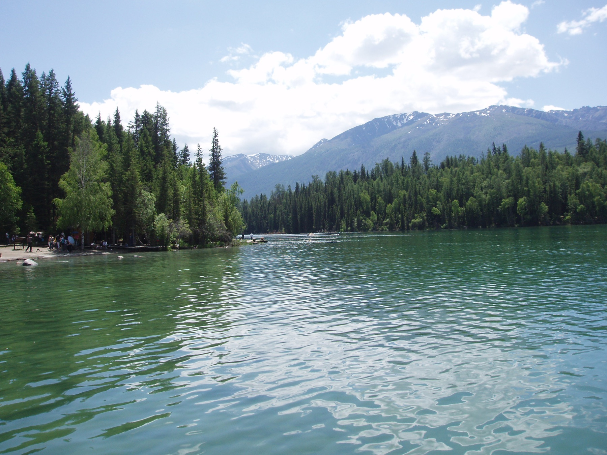
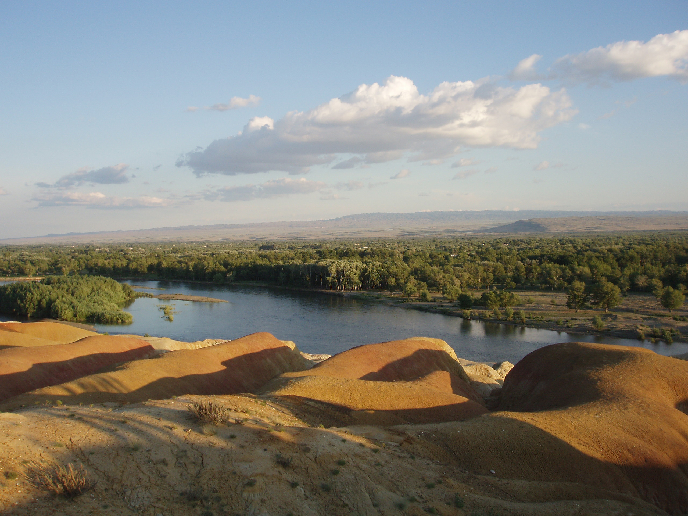
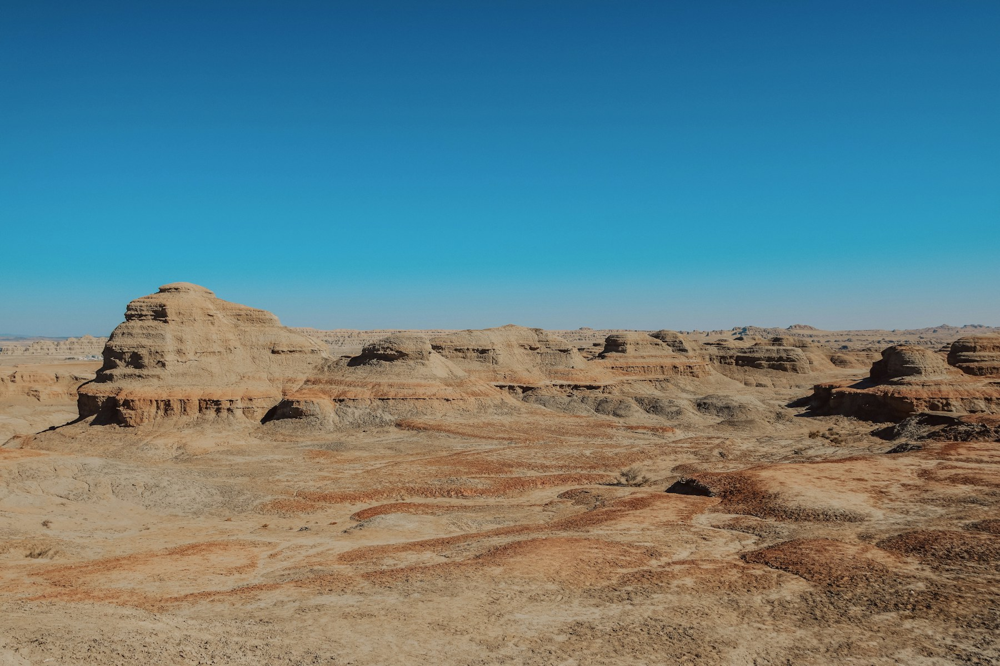
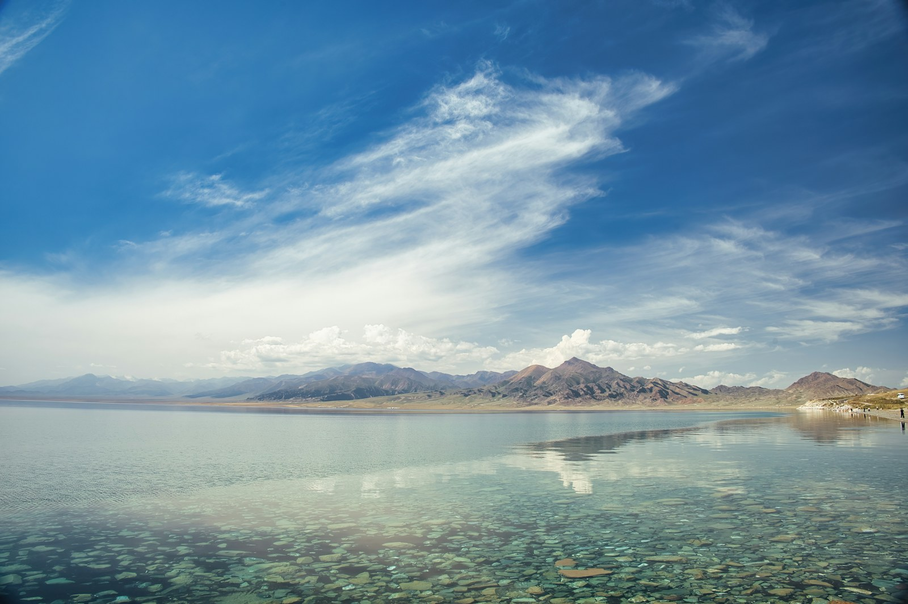
城市满油、半箱补油、两小时换司机。山区油站和服务驿站只作为备选，不能把行程建立在“到了再说”上。
| 路段 | 首选补油 | 休息/卫生间 | 服务能力与注意事项 |
|---|---|---|---|
| S21 乌鲁木齐—阿勒泰 | 乌鲁木齐满油；黄花沟或吉力湖补油 | 克拉美丽为主休息点 | 克拉美丽配套较完整；荒漠路段可能无信号，下载离线地图 |
| G681 阿禾公路 | 必须在阿勒泰加满 | 入口、也克阿恰、181吊桥驿站 | 沿线油站不作为唯一保障；备午餐、热水，随时接受天气管制 |
| 贾登峪—喀纳斯—布尔津 | 贾登峪、冲乎尔、布尔津 | 景区游客中心、冲乎尔镇 | 禾木村内不作为可靠加油点；喀纳斯核心区靠区间车；贾登峪进景区前务必满油 |
| G3014 布尔津—克拉玛依 | 布尔津满油；乌尔禾补油 | 乌尔禾、百口泉、克南服务区 | 克拉玛依城市维修、轮胎、洗车服务最完整 |
| G30 赛里木湖往返 | 克拉玛依满油；精河补油 | 奎屯/乌苏、托托、精河、五台、石河子 | 国庆服务区可能排队；不把正餐完全押在一个服务区 |
两组情侣每晚选择完全相同的房型和取消政策，住宿费用自然保持一致。山区优先保暖与热水，不为“网红景观房”牺牲睡眠。
手抓肉、羊肉汤、土火锅、哈萨克奶茶、酸奶、包尔萨克。景区午餐从简，晚上再点热菜。
冷水鱼、狗鱼或五道黑、俄罗斯风味酸奶。点鱼前确认重量、单价、做法和总价。
椒麻鸡、牛骨髓丸子汤、抓饭、大盘鸡。第二天长途，晚餐不饮酒、不过量。
高白鲑、羊肉、奶茶。进入景区前准备热水、面包、水果和方便食品，防止晚间餐馆提早关门。
两组预算完全一致：整车公共费用四等分，每对情侣承担2人的门票餐饮，以及每晚1间同档房。
| 项目 | 4人合计 | 每组情侣 | 人均 |
|---|---|---|---|
| 租车及车辆保险（8天） | ¥8,000—12,800 | ¥4,000—6,400 | ¥2,000—3,200 |
| 油费（约228—264升） | ¥1,600—2,100 | ¥800—1,050 | ¥400—525 |
| 过路费 | ¥650—900 | ¥325—450 | ¥163—225 |
| 停车费 | ¥250—450 | ¥125—225 | ¥63—113 |
| 住宿（18间夜） | ¥11,900—24,200 | ¥5,950—12,100 | ¥2,975—6,050 |
| 景区门票与区间车 | ¥2,600—3,600 | ¥1,300—1,800 | ¥650—900 |
| 餐饮 | ¥8,000—12,000 | ¥4,000—6,000 | ¥2,000—3,000 |
| 旅行保险、补给与机动 | ¥2,000—4,000 | ¥1,000—2,000 | ¥500—1,000 |
| 估算合计 | ¥35,000—59,750 | ¥17,500—29,875 | ¥8,750—14,938 |
不含往返新疆机票和购物。油价、租车价和国庆住宿属于浮动项；“舒适型目标”位于估算区间中部，并非最低价格。
9月底的北疆已经不是普通秋游：城市仍可能暖，禾木、喀纳斯与赛里木湖的清晨则要按冬季准备。
| 日期 / 区域 | 行李规划温度 | 主要天气风险 | 当天穿法 |
|---|---|---|---|
| 9/25、10/3—4 乌鲁木齐 | 约 6—18℃ | 昼夜温差大；冷空气来时降温快，10/3夜市与10/4上午返程偏冷 | 长袖打底＋抓绒/针织＋防风外套；深夜落地、夜市和返程时备轻薄羽绒 |
| 9/26 S21—阿勒泰 | 约 4—17℃ | 荒漠日晒、侧风；越往北越冷，服务区体感低 | 速干长袖＋抓绒＋冲锋衣，傍晚加轻薄羽绒；太阳镜与防晒 |
| 9/27 阿禾公路—禾木—贾登峪 | 约 -3—12℃ | 高海拔路段可能雨夹雪、积雪、结冰或临时关闭；傍晚回贾登峪体感更低 | 保暖内衣＋抓绒＋羽绒＋防水硬壳；防水徒步鞋、帽子、手套随身 |
| 9/28—29 喀纳斯2晚 | 约 -5—10℃ | 清晨霜冻、晨雾、雨雪；栈道湿滑，日照后体感又会升高 | 清晨厚羽绒＋硬壳＋保暖裤＋帽/手套；中午按“外壳—羽绒—抓绒”逐层脱 |
| 9/30—10/1 布尔津—克拉玛依 | 约 5—20℃ | 干燥、风大、紫外线强；魔鬼城无遮阴 | 长袖＋薄抓绒＋防风外套，厚外套放车内；遮阳帽、墨镜、润唇膏 |
| 10/2—3 赛里木湖 | 约 -4—10℃ | 湖边强风会显著拉低体感，可能湿雪、道路结冰或景区限行 | 保暖内衣＋抓绒＋厚羽绒＋防水硬壳；帽子、厚手套、防水鞋不可托运遗漏 |
保暖/速干内层2套、抓绒1件、轻薄羽绒1件、厚羽绒1件、防水防风硬壳1件；长裤2条＋保暖秋裤1—2条。四层可组合，比只带一件厚外套更实用。
防水防滑徒步鞋1双、备用运动鞋1双、厚袜3—4双；毛线帽、薄手套＋保暖手套、脖套、墨镜、SPF50、防晒唇膏、暖宝宝。
厚羽绒、帽手套、雨衣、保温杯、热量食品、充电宝、头灯和一双干袜放车厢，不压进行李箱。进入阿禾与赛湖前先穿够再下车。
复核入口：中国天气网·乌鲁木齐气候 · 中国天气网·阿勒泰 · 新疆交通运输厅。官方资料提示：乌鲁木齐9月下旬冷空气趋于频繁；喀纳斯秋季夜间可能接近冰点，厚羽绒有实际必要。
山里天气决定路线，不是行程表决定天气。所有山区和湖区住宿都应选可免费取消。
北疆长途最重要的原则：先保护人员、再标明位置、最后处理车辆或行程。四个人不要分头行动。
号码依据：新疆交通运输厅2026出行服务指南（12122、12328、96200） · 新疆文旅厅（12345）。现场标牌、交警和景区指挥优先。
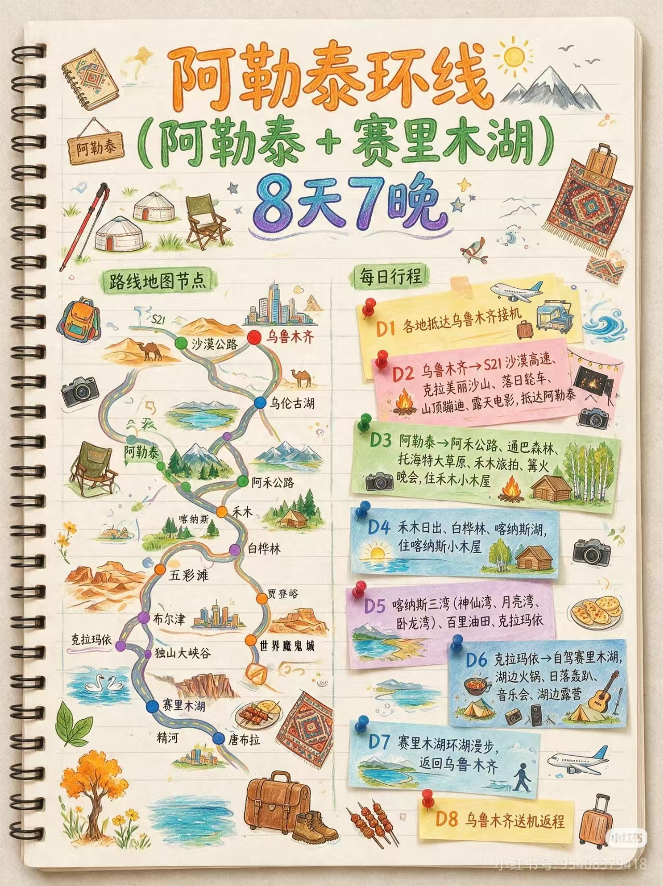
原始参考图包含阿勒泰、禾木、喀纳斯、布尔津、克拉玛依和赛里木湖等核心节点。本方案保留了它最精彩的北疆结构，但根据9月底天气、10月3日航班和两名司机的实际驾驶负荷，删除了独库、那拉提、喀拉峻等不顺路或季节风险更高的部分。
最终原则：不追求景点数量最大化，追求每天可以按时抵达、晚上能睡好、第二天仍有体力看风景。